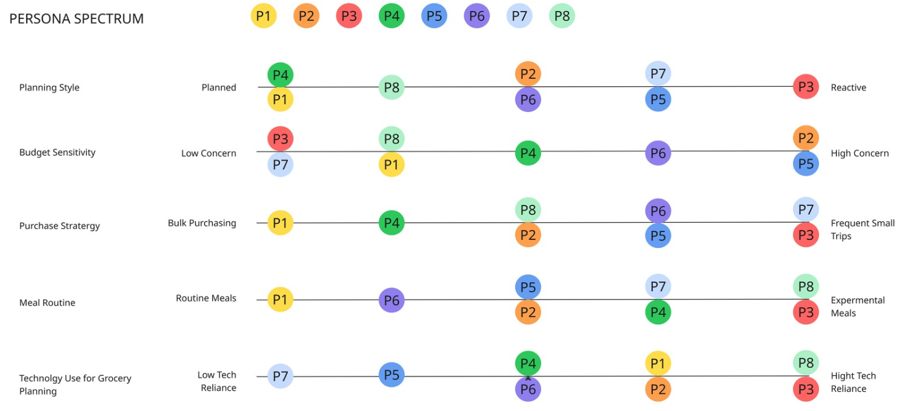

Role
User Research · Food Waste
Single-Person Household Food Consumption
A qualitative research study exploring how people living alone plan groceries, use food, manage waste, and make meal decisions around time, cost, portion sizes, and visibility.
Project Type
Qualitative food behavior study
Methods
Interviews, coding, affinity mapping, personas
Timeline
Jan 2026 - Mar 2026
Overview
Solo food routines create waste before food is ever thrown away.
Single-person households often shop within systems designed for families: larger packages, bulk pricing, limited portion options, and little support for tracking what is already at home.
The study investigated how individuals living alone plan, purchase, store, cook, and adjust food routines, with the goal of identifying technology-based opportunities to reduce food waste.
Research Question
How might technology support people living alone in managing groceries and meals to reduce food waste?
Understand solo grocery routines
Explore how people plan, purchase, store, and use food when shopping only for themselves.
Identify breakdowns
Find where portioning, planning, budgeting, storage, and expiration awareness fail in everyday routines.
Translate patterns into design opportunities
Use research evidence to identify practical support for shopping, inventory, planning, and food awareness.
Methods
The study focused on interviews and behavioral synthesis.
Participants
8 individuals living alone
Ages 23 to 35, with mixed grocery routines and weekly budgets.
Data Collection
Interview protocol
Questions explored grocery planning, purchase decisions, food use, storage, and waste habits.
Analysis
Inductive coding and affinity mapping
Findings were grouped into recurring themes, persona spectrums, and journey patterns.
Voices from the Field
Participants described food waste as a result of routine breakdowns, not laziness.
“Sometimes I buy with good intentions and then work gets busy and I don’t get to it.” P1
“A lot of that stuff comes in more than I realistically need.” P4
“If it gets pushed to the back of the fridge, I forget about it.” P7
“You buy the whole packet even if you don’t need it… and you know some of it will go to waste.” P8
Key Findings
Food waste emerged from planning gaps, invisible inventory, and package-size mismatch.
People plan through routines, not formal systems
List-making, repeat meals, and familiar shopping patterns help users make grocery decisions, but these routines are constantly adjusted around time, effort, cost, and portions.
Waste often starts with overbuying and invisibility
Bulk packaging and limited portion awareness lead to excess purchases, while items stored out of sight are more likely to be forgotten before they expire.
Food management becomes reactive
Participants lacked a simple system for tracking inventory, expiration, and future use, so decisions were made in the moment instead of planned intentionally.
Behavioral Spectrum
Participants were mapped across planning, budget, shopping, waste, and tech-reliance behaviors.

Who We Designed For
Three persona patterns captured the main behavioral differences.
Alex Chen
The bulk buyer
Buys in bulk but struggles to use everything before it expires.
Maya Patel
The busy planner
Plans meals but often forgets items because work and schedule changes interrupt the routine.
Daniel Ramirez
The spontaneous shopper
Makes spontaneous purchases and lacks a consistent system to track food usage.
Typical User Journey
The food routine cycles through planning, shopping, storing, cooking, consumption, and adjustment.
PLANNING
Simple lists or memory
Users plan around schedules, familiar meals, and what they remember needing.
SHOPPING
Convenience and package size
Purchases are shaped by habit, cost, bulk deals, and package sizes that may not fit one person.
STORING
Low visibility inventory
Items are stored without tracking, and food pushed out of sight is more likely to be forgotten.
COOKING
Time and effort decide meals
Meals depend on energy, schedule changes, and how much preparation feels realistic that day.
CONSUMPTION
Visible items get used first
Leftovers and unused food can move to the back, making waste more likely before users notice.
ADJUSTMENT
Patterns shape future behavior
Users learn from prior waste and adjust quantities, routines, or shopping choices over time.
Discussion
Grocery management is continuous, but support tools are usually fragmented.
Continuous Planning
Users learn from prior waste
Participants adjust quantities and routines over time based on what was wasted, used, or skipped.
Daily Constraints
Time, effort, cost, and package size shape decisions
Food choices were strongly affected by schedules, energy levels, budgets, and available portions.
Food Awareness
Waste starts before disposal
Forgotten items, delayed use, short shelf life, and bulk purchasing created waste before food was actually discarded.
Tool Gap
Existing tools only support part of the process
Users need support across planning, shopping, storing, cooking, and adjusting, not just grocery lists.
Design Opportunities
Technology should support low-effort food awareness across the whole grocery cycle.
Support planning across grocery cycles
Help users build on prior use, waste, and routine changes instead of starting over each shopping trip.
Support smarter shopping decisions
Show cost, prep effort, portion size options, and single-person-friendly package decisions.
Improve food awareness at home
Help users notice what is available, what is nearing expiration, and what should be used soon.
Bridge planning, inventory, and schedule changes
Create simple support that adapts when work, time, and energy disrupt planned meals.
Limitations and Future Work
The next step is testing behavior over time, not just asking about it once.
Limitation
Small sample and demographic scope
Participants were primarily younger adults in urban settings, limiting how far the findings can generalize.
Limitation
Self-reported behavior
The study captured interview accounts rather than multi-week real-world grocery behavior.
Future Work
Longitudinal tracking
Diary studies could track actual purchasing, usage, spoilage, and routine adjustment across several grocery cycles.
Future Work
Prototype and evaluate solutions
Inventory tracking, expiration alerts, and portion guidance should be tested for real impact on waste reduction.
Outcome
The study identified practical design directions for reducing food waste in single-person households.
The final report reframed food waste as a routine-management issue rather than a simple motivation problem. Participants wanted to reduce waste, but struggled with package sizes, forgotten items, changing schedules, and low-visibility inventory.
01
Better grocery-cycle planning
02
More visible home inventory
03
Smarter portion decisions
04
Low-effort waste prevention
Reflection
Food waste was less about intention and more about visibility, timing, and fit.
This project showed how everyday food waste can emerge from small mismatches between real solo routines and systems designed around larger households. People wanted to make better decisions, but packaging, storage, time pressure, and lack of inventory visibility made that difficult.
My main contribution included supporting research synthesis, persona development, journey framing, and translating findings into design opportunities for planning, shopping, inventory, and portion awareness.
If I continued this project, I would prototype a low-effort inventory and meal-planning tool, then test it through diary studies across multiple grocery cycles.